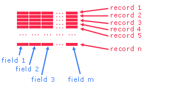

Module H - Files
Records, Fields and Tables
Create C programs to implement solutions using
sequential text files.
Records |
Fields |
Tables |
In-Class Practice |
Exercises
A file consists of records. A record consists of
fields. A collection of records with equal numbers
of fields in each record constitutes a table.

Records
We call each line in a text file a record.
That is, a record is a sequence of characters that ends with a newline delimiter.
Typically, one record refers to one entity of information.

Consider a text file named winter.txt
that contains the following information
5 Pairs of Boots
2 Coats
3 Hats
3 Pairs of Gloves
|
Each record in this file refers to a specific item
of clothing.
We can determine the number of records in this file
by counting the number of newline characters in the file:
/* Number of Records
* records.c
* Mar 22 2005
* BTP100
*/
#include <stdio.h>
int main( ) {
FILE *fp = NULL;
int c, nrecs;
fp = fopen("winter.txt","r");
if (fp != NULL) {
nrecs = 0;
do {
c = fgetc(fp);
if (c != EOF) {
if ((char)c == '\n')
nrecs++;
}
} while (!feof(fp));
printf("%d records on file\n",
nrecs);
fclose(fp);
}
return 0;
}
|
3 records on file
|
Fields
A field is one element of a record. A field holds an integral
piece of data. A field may be of any data type.
We separate any two adjacent fields in a record using a field delimiter.

Consider the file named winter.txt (see above).
Each record in this file contains two fields: the first field
holds a quantity and the second field holds a string describing
the item.
The two fields are delimited by a blank character.
The following program reads the records on the file and displays
them in tabular format
/* Table of Items
* simpleTable.c
* Mar 22 2005
* BTP100
*/
#include <stdio.h>
int main( ) {
FILE *fp = NULL;
char label [21];
int n;
fp = fopen("winter.txt", "r");
if (fp != NULL) {
printf(" Winter Items\n"
" ============\n\n"
"No Description \n"
"---------------------\n");
while (fscanf(fp,"%d %20[^\n]%*c",
&n, label) == 2)
printf("%6d %-20s\n", n, label);
fclose(fp);
}
return 0;
}
|
Winter Items
============
No Description
-----------------------
5 Pairs of Boots
2 Coats
3 Hats
3 Pairs of Gloves
|
Tables
Consider a file named spring.txt.
The contents of this file are listed below.
Each record contains three fields: the first field
holds a quantity, the second field holds a string describing
the item and the third field holds the unit price.
In this file, the fields are delimited by semi-colons:
2;Light Jacket;95.89
3;Long-Sleeved Shirts;67.89
2;Large Skateboards;45.98
|
We use the semi-colon as a field delimiter here
because the semi-colon is not part of any data on the file.
We avoid the blank character as a delimiter since the second
field contains embedded
blanks.
The following program reads each record on the file
and displays the fields in a tabular format
/* Table of Items
* table.c
* Nov 17 2004
* BTP100
*/
#include <stdio.h>
int main( void ) {
FILE *fp = NULL;
char label [21];
int n;
double price;
fp = fopen("spring.txt","r");
if (fp != NULL) {
printf(" Spring Items\n"
" ============\n\n"
"No Description Price\n"
"--------------------------\n");
while (fscanf(fp,"%d;%20[^;];%lf%*c",
&n, label, &price) == 3)
printf("%2d %-20s%5.2lf\n",
n, label, price);
}
fclose(fp);
}
return 0;
}
|
Spring Items
============
No Description Price
----------------------------
2 Light Jacket 95.89
3 Long-Sleeved Shirts 67.89
2 Large Skateboards 45.98
|
Note the field delimiters embedded within the fscanf
format string.
Oversized Strings
The above program assumes that the labels on the file
do not exceed the amount of space allocated by the
program. Another file may however contain labels
that are too long to fit within the space allocated.
To accomodate such files, we upgrade our program
to skip in any label those characters that our
program cannot store. We do so by
reading each record in two separate parts:
/* Table of Items
* tableBetter.c
* Mar 22 2005
* BTP100
*/
#include <stdio.h>
int main( ) {
FILE *fp = NULL;
char label [21];
int n;
double price;
char c;
fp = fopen("spring.txt","r");
if (fp != NULL) {
printf(" Spring Items\n"
" ============\n\n"
"No Description Price\n"
"--------------------------\n");
while (fscanf(fp,"%d;%20[^;]%c",
&n, label, &c) == 3) {
if (c != ';')
fscanf("%*[^;];%lf%*c", &price);
else
fscanf("%lf\n", &price);
printf("%2d %-20s%5.2lf\n",
n, label, price);
}
fclose(fp);
}
return 0;
}
|
Spring Items
============
No Description Price
----------------------------
2 Light Jacket 95.89
3 Long-Sleeved Shirts 67.89
2 Large Skateboards 45.98
|
Note how we stop reading the records as soon as we encounter
a return code other than 3.
In-Class Practice
Try the practice problem in Handout 19.
Exercises
- Read pages 93-96 from Evan Weaver's subject notes,
- Try walkthrough 16 in Evan Weaver's notes and
- Try word problems sortByInitials
and justComments.
|